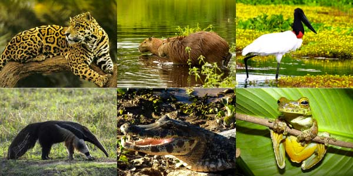
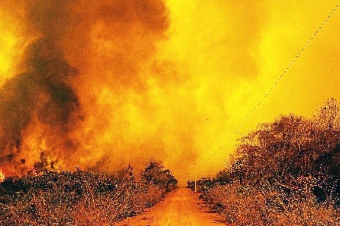

Características: Pantanal ou Complexo do Pantanal é o menor bioma brasileiro e a maior planície de inundação do mundo com 250 mil km² de extensão.
Considerado pela UNESCO "Patrimônio Natural Mundial" e "Reserva da Biosfera", com a segunda maior variedade de animais no Brasil..
O Pantanal localiza-se na Bacia Hidrográfica do Alto Paraguai e abrange os estados brasileiros do Mato Grosso e Mato Grosso do Sul; e ainda, uma pequena parte dos países Bolívia e Paraguai, onde é chamado de Chaco.
Flora: A vegetação do Pantanal conta com um mosaico de matas, cerradões e savanas, isto por que, tem influência direta de outros três importantes biomas brasileiros: Amazônia, Cerrado e Mata Atlântica – com espécies como cambará-lixeira, canjiqueira e carandá, que se estabelecem em campos inundáveis de diversos tipos, incluindo brejos e lagoas com plantas típicas como camalotes.
O clima do Pantanal é predominantemente Tropical Continental marcado pelas altas temperaturas e grande índice pluviométrico, um verão quente e chuvoso e um inverno frio e seco.
Fauna: Segundo pesquisas, o bioma possui aproximadamente 1.000 espécies de borboletas, 650 de aves, 120 de mamíferos, 260 de peixes e 90 de répteis. Na fauna do ecossistema pantaneiro destacam-se:
Aves: tuiuiús (a ave símbolo do Pantanal), arara-azul;
Répteis: jacarés (jacaré-do-pantanal e jacaré-de-coroa), lagartos (camaleão, calango-verde), cobras.
Mamíferos: capivaras, ariranhas, anta, tamanduá, cachorro-do-mato, onça-pintada,
Peixes: piranha, pintado, dourado, jaú.

Queimadas: O ano de 2020 alcançou recordes de queimadas e é considerado o pior ano para o bioma, que registrou 22.116 focos de incêndio, número maior que a soma dos três últimos anos e superior desde que foi inicializado o monitoramento, em 1998, segundo dados do Inpe (Instituto Nacional de Pesquisas Espaciais). Setembro foi o mês que o Pantanal apresentou o maior número de queimadas e até novembro cerca de 40 mil km2 tinha sido tomado pelas queimadas, o que corresponde a cerca de 30% do bioma.